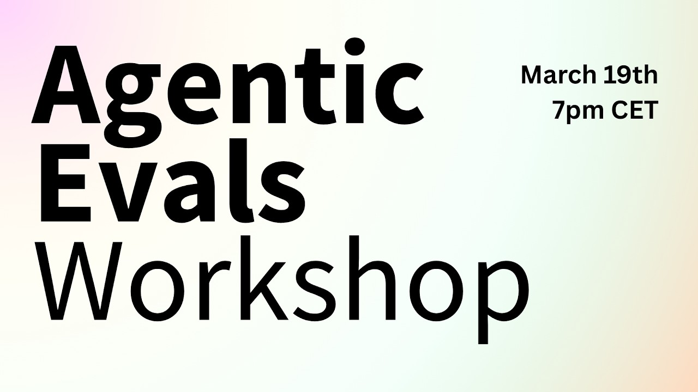
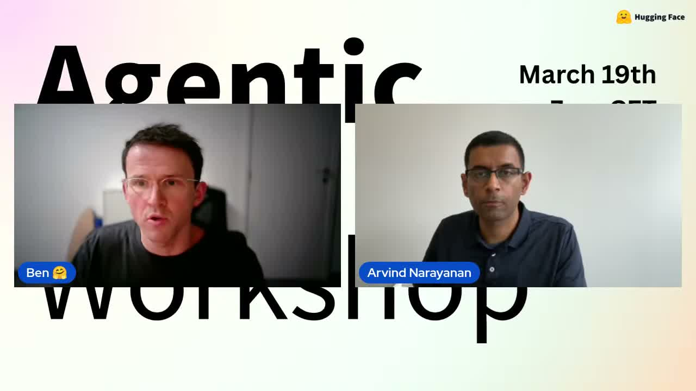
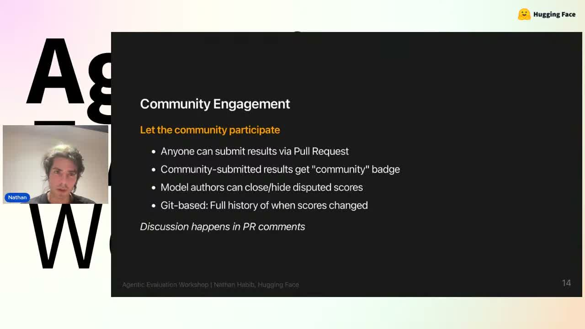

Hugging Face가 진행한 라이브 Agentic Evaluations Workshop - Deep Dive on the Future on Evals for Agents. 는, 요즘 빠르게 늘어나는 “에이전트”를 무엇으로, 어떻게, 어디까지 평가해야 하는가를 다룬 긴 토론이었습니다.
영상 길이는 약 1시간 49분이고, Hugging Face·Princeton·Meta·Bespoke Labs 등 다양한 발표자가 참여했습니다. 자동 자막과 영상 설명을 바탕으로 보면, 이 라이브의 핵심 메시지는 꽤 분명합니다.
에이전트 평가는 더 이상 단일 점수 경쟁이 아니라, 신뢰성·재현성·환경 적합성·공개 검증까지 함께 보는 문제다.
이 글에서는 라이브 내용을 한국어로 발췌·요약해, 실무자와 교육자 관점에서 바로 이해할 수 있게 정리해보겠습니다.
이 라이브의 핵심 주제
영상 설명과 발표 내용을 종합하면 다음 질문이 중심축입니다.
- 에이전트 시스템의 state of the art 평가는 어디까지 왔는가
- 벤치마크 성능이 높은데도 실제 사용성은 왜 기대만큼 따라오지 않는가
- 모델이 아니라 에이전트 시스템 전체를 평가하려면 무엇이 더 필요할까
- 공개 벤치마크, 리더보드, 환경 설계는 어떤 원칙으로 가야 할까
특히 첫 발표에서는 기존 LLM 평가와 달리 에이전트 평가는 장기 실행(long horizon), 도구 사용(tool use), 환경 변화, 사람과의 상호작용까지 고려해야 한다고 짚습니다.
발표 1: “모델 점수”만 보고 에이전트를 이해할 수 없는 이유
Avijit Ghosh의 발표에서 가장 인상적이었던 대목은, 최근 AI 업계의 벤치마크 보고 관행에 대한 비판입니다.
그는 공개된 성능표가 커 보여도 실제로는 다음 정보가 빠져 있는 경우가 많다고 말합니다.
- 어떤 문제를 제외했는지
- 어떤 세팅으로 실행했는지
- 동일 점수가 나와도 각 세션에서 행동이 어떻게 달랐는지
- 모델 외에 어떤 서브에이전트, MCP 서버, 메모리 설정을 사용했는지
즉, 모델 이름 하나로 에이전트 결과를 대표시키는 시대는 끝나가고 있다는 뜻입니다.
에이전트는 텍스트 생성기가 아니라, 계획하고 실행하고 도구를 호출하는 시스템입니다. 그래서 평가지표도 단순 pass/fail보다 더 넓어져야 합니다.
발표에서 제시된 보완 포인트
- 세션 단위 보고: 같은 평균 점수라도 실행 경로와 안정성은 다를 수 있음
- 시스템 구성 공개: 모델, 서브에이전트, MCP 서버, 메모리 설정 등
- 상호작용 기록: 사람이 어느 순간 개입했는지, 노이즈가 있었는지
- 재현 조건 공개: 환경, 프롬프트 변형, 시드, 비용, 오류 조건
이 부분은 최근 공개 리더보드를 읽을 때도 그대로 적용됩니다. 점수만 읽으면 쉬워 보이지만, 실제로는 평가 프로토콜이 결과의 절반 이상을 결정할 수 있습니다.
발표 2: 정확도는 오르는데, 왜 현장에서는 아직 불안할까
Arvind Narayanan의 발표는 이 라이브의 핵심 논지를 가장 명확하게 정리해줍니다.
그는 지금의 에이전트들이 여러 capability benchmark에서는 빠르게 발전하고 있지만, 실제 업무에서 사람을 대체할 만큼 널리 쓰이지는 않는 이유를 capability-reliability gap으로 설명합니다.
쉽게 말하면 이렇습니다.
- 능력(capability) 은 꽤 좋아졌다.
- 하지만 신뢰성(reliability) 은 아직 충분히 따라오지 못한다.
발표에서 든 예시도 직관적입니다. 음악을 잘못 트는 음성비서는 짜증나는 정도에서 끝나지만, 결제나 주문을 대신하는 에이전트가 10% 확률로 틀리면 그건 서비스가 아니라 사고에 가깝습니다.
신뢰성을 볼 때 중요하게 본 요소
발표 내용 기준으로 보면 신뢰성은 대략 네 방향으로 나뉩니다.
- 일관성(Consistency)
- 같은 문제를 여러 번 풀 때 결과가 안정적인가
- 같은 답을 내더라도 경로가 지나치게 흔들리지는 않는가
- 강건성(Robustness)
- API 타임아웃, 도구 오류, 환경 변화가 있어도 버티는가
- 프롬프트 표현이 달라져도 성능이 유지되는가
- 보정(Calibration)
- 성공 확률을 과신하지 않는가
- “잘 모르겠다”고 말해야 할 때 제대로 말하는가
- 안전성(Safety)
- 실패가 단순 포맷 오류인지, 데이터 삭제 같은 심각한 사고인지
이 관점은 교육 현장에도 중요합니다. 학생들이나 교사들이 에이전트를 체감할 때는 “정답률”보다 실수의 종류와 반복성을 먼저 경험하기 때문입니다.
발표 3: GAIA 2와 환경 기반 평가가 왜 중요해지는가

중반부 발표에서는 GAIA 2, 환경 기반 평가 프레임워크, 그리고 long-horizon evaluation 이야기가 이어집니다.
여기서 중요한 포인트는 에이전트를 평가할 때 정답 하나만 채점하는 시험장으로는 부족하다는 점입니다.
현실의 에이전트는 다음을 동시에 마주합니다.
- 중간에 실패하는 API
- 바뀌는 인터페이스와 도구 시그니처
- 애매하게 주어진 사용자 요청
- 여러 턴에 걸친 장기 작업
- 때때로 개입하는 사람
GAIA 2 관련 논의에서는 이런 현실성을 반영하기 위해:
- 더 엄격한 체커를 두고
- 노이즈를 늘려 과적합을 막고
- 도구 실패율이나 시그니처를 바꿔도
- 같은 태스크를 풀 수 있는지 보려는 시도가 소개됩니다.
이건 매우 중요한 방향입니다. 벤치마크가 지나치게 “정해진 정답 경로”만 요구하면, 실제 현장에서 쓸 수 있는 에이전트보다 벤치마크 잘 푸는 에이전트를 만드는 쪽으로 흘러가기 쉽기 때문입니다.
발표 4: 실무에서는 왜 “eval-first”가 더 중요해졌나
Bespoke Labs 쪽 발표는 비교적 실무적인 톤이 강했습니다.
핵심은 한 문장으로 정리됩니다.
에이전트를 먼저 배포하고 나중에 평가하지 말고, 평가 구조를 먼저 만들고 그다음 개선하라.
발표에서는 다음과 같은 실무 함정을 짚습니다.
- 출력만 대충 눈으로 보고 “잘 되는 것 같다”고 판단하는 것
- 프로덕션에 올려놓고 그 자체를 평가 환경처럼 쓰는 것
- 플래너, 함수 호출, 세부 컴포넌트에 너무 일찍 집착하는 것
- 재현 가능한 테스트 세트 없이 감으로 튜닝하는 것
이 부분은 소프트웨어 테스트 문화와도 연결됩니다. 결국 에이전트도 배포되는 순간 제품이기 때문에, 회귀 테스트·환경 분리·장애 상황 시뮬레이션이 자연스러운 기본값이 되어야 합니다.
관련해서 예전에 정리했던 FinMCP Bench 분석 글도 함께 보면, “모델이 똑똑한가”와 “현장 업무를 견딜 만큼 구조적으로 검증됐는가”가 다르다는 점을 더 입체적으로 볼 수 있습니다.
발표 5: 오픈 벤치마크와 공개 검증의 가치

후반 패널에서 특히 흥미로웠던 논점은 공개 벤치마크 vs 벤치마크 게임(gaming) 문제였습니다.
흔히 “벤치마크를 공개하면 금방 오염된다”고 말하지만, 발표자들은 그 주장도 충분히 검증된 상식은 아니라고 짚습니다. 오히려 벤치마크가 비공개일수록 다음 문제가 커질 수 있습니다.
- 누가 어떤 조건으로 돌렸는지 외부 검증이 어려움
- 결과 재현이 어려워 신뢰를 쌓기 힘듦
- 닫힌 모델·닫힌 환경에서는 평가의 실제 의미를 확인하기 어려움
그래서 이 라이브는 전체적으로 더 많은 공개, 더 많은 설명, 더 많은 검증 가능성 쪽에 무게를 둡니다.
이 관점은 교육 콘텐츠를 만들 때도 유용합니다. 학생이나 일반 독자에게 AI 평가를 설명할 때, “점수표를 믿으세요”보다 **“조건과 맥락까지 같이 보세요”**가 훨씬 건강한 메시지이기 때문입니다.
이 라이브에서 건질 핵심 포인트 7가지
정리하면 이번 워크숍의 핵심 포인트는 아래 7가지입니다.
-
에이전트 평가는 모델 평가와 다르다. 텍스트 정답률만으로는 부족하고, 행동·도구·환경까지 봐야 한다.
-
정확도와 신뢰성은 별개다. capability가 좋아도 reliability가 낮으면 실무 배치는 어렵다.
-
세션 단위 기록이 중요하다. 평균 점수만 같아도 실행 경로, 비용, 실패 양상은 크게 다를 수 있다.
-
환경 설계가 곧 평가 품질이다. 노이즈, 실패, 장기 과제를 넣지 않으면 현실성을 놓치기 쉽다.
-
사람 개입을 평가에서 빼면 안 된다. 실제 사용은 거의 항상 인간-에이전트 협업이기 때문이다.
-
실무에서는 eval-first가 필요하다. 먼저 테스트 구조를 만들고, 그 위에서 에이전트를 개선해야 한다.
-
공개 검증 가능성이 신뢰를 만든다. 오픈 벤치마크와 상세 보고는 게임 방지뿐 아니라 재현성 확보에도 중요하다.
교육적 시사점: 학생에게 무엇을 가르쳐야 하나
이 영상은 단순히 연구자용 이야기가 아닙니다. AI 교육 관점에서도 시사점이 큽니다.
1) “점수 높은 모델”보다 “잘 검증된 시스템”을 가르쳐야 한다
학생들은 종종 리더보드 순위를 곧바로 실력으로 받아들입니다. 하지만 실제로는 어떤 도구와 환경, 프롬프트, 평가 조건을 썼는지가 성능을 크게 바꿉니다.
앞으로 AI 리터러시 교육은 “모델 이름 맞히기”보다 평가 맥락 읽기 쪽으로 더 이동해야 합니다.
2) 실패 사례 분석이 더 중요해진다
에이전트 교육에서는 정답 예시만 보여주면 안 됩니다.
- 왜 실패했는가
- 어떤 환경 변화에서 무너졌는가
- 사람이 언제介入해야 하는가
- 과신(confidence overclaim)은 어떻게 보이는가
이런 질문이 실제 활용 역량과 직결됩니다.
3) 평가 설계 자체를 프로젝트로 다룰 수 있다
학생 프로젝트에서도 “에이전트 만들기”만 목표로 두지 말고,
- 테스트 태스크 설계
- 성공 기준 정의
- 오류 상황 만들기
- 반복 실행 후 비교
까지 포함하면 훨씬 좋은 학습이 됩니다.
실무적 시사점: 지금 바로 적용할 수 있는 체크리스트
현업에서 에이전트를 다루고 있다면, 이번 라이브를 보고 바로 적용할 수 있는 질문은 다음 정도입니다.
- 우리는 평균 점수 말고 반복 실행 안정성을 보고 있는가?
- 도구 실패나 환경 변화에 대한 내결함성 테스트가 있는가?
- 사람 검수 전제인지, 완전 자동화인지 배치 기준이 분명한가?
- 결과를 다른 팀이 재현할 수 있을 만큼 설정과 로그가 남는가?
- 평가 환경이 너무 깨끗해서 현실을 과소평가하고 있지는 않은가?
이 다섯 가지에 선뜻 “예”라고 답하기 어렵다면, 에이전트 성능보다 먼저 평가 체계를 손보는 편이 낫습니다.
마무리
이번 Hugging Face 라이브는 “에이전트가 얼마나 똑똑한가”를 자랑하는 자리가 아니라, 우리가 에이전트를 너무 단순하게 평가해온 건 아닌가를 되묻는 자리였습니다.
개인적으로 가장 중요했던 메시지는 이것입니다.
좋은 에이전트는 높은 점수를 받은 에이전트가 아니라, 실패 조건까지 설명 가능한 에이전트다.
앞으로 에이전트 관련 리더보드나 데모를 볼 때는 성능 숫자만 보지 말고, 세션 기록·환경 조건·재현성·인간 개입 여부까지 함께 확인해보면 좋겠습니다. 그때부터 비로소 “쓸 수 있는 에이전트”와 “데모에 강한 에이전트”를 구분할 수 있으니까요.
참고
- 원본 영상: Agentic Evaluations Workshop - Deep Dive on the Future on Evals for Agents.
- 주최: Hugging Face
- 출연(설명란 기준): Avijit Ghosh, Arvind Narayanan, Pierre Andrews, J.J. Allaire, Mahesh Sathiamoorthy, Nathan Habib
이 글은 영상 설명, 공개 메타데이터, 자동 자막 기반으로 정리했습니다. 자동 자막 특성상 일부 표현은 자연스러운 한국어 문맥에 맞게 정리·재구성했습니다.